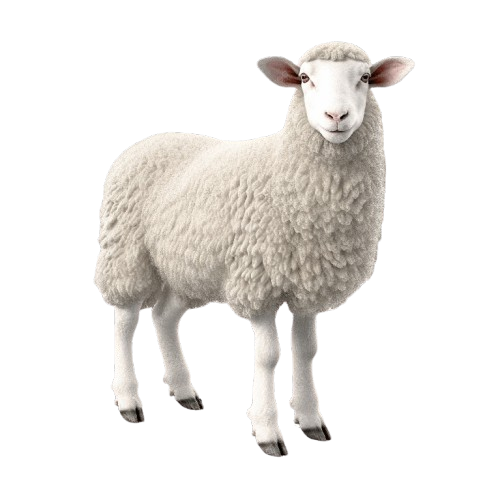
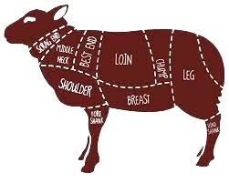

Halol va Yangi Qo'ylar, Sizning Ishonchingiz Uchun!
Biz sizga tirik yoki so'yilgan holatda, eng sifatli va sog'lom qo'ylarni taklif etamiz. Islom shariatiga muvofiq so'yish xizmati ham mavjud.
Mahsulotlarni Ko'rishBizning Qo'ylarimiz

Tirik Qo'ylar
Tanlangan, sog'lom va semiz tirik qo'ylar. Har qanday tadbirlar, qurbonlik va to'ylar uchun.
Buyurtma Berish
So'yilgan Qo'y Go'shti
Veterinar nazoratidan o'tgan, halol va gigienik sharoitda so'yilgan, yangi go'sht.
Buyurtma BerishBizning Xizmatlarimiz
Halol So'yish Xizmati
Siz xarid qilgan qo'yni islom shariatiga to'liq muvofiq, gigiyenik sharoitda so'yib, sizga tayyorlab beramiz. Qo'shimcha kesish va qadoqlash xizmatlari ham mavjud.
- Islom shariatiga to'liq muvofiq so'yish
- Tajribali qassoblar
- Gigienik va toza sharoit
- Kesish va qadoqlash xizmatlari
- Tez va ishonchli xizmat ko'rsatish
Biz Haqimizda
"Qo'y Bozori" sizga faqatgina eng yangi va sog'lom qo'ylarni taklif etishga ixtisoslashgan. Biz o'z faoliyatimizni 2010-yildan buyon olib boramiz va mijozlarimizga ishonchli, halol va sifatli xizmat ko'rsatishni maqsad qilganmiz.
Bizning barcha qo'ylarimiz malakali veterinarlar nazoratidan o'tgan va eng yaxshi sharoitlarda boqiladi. Biz nafaqat tirik qo'ylar, balki islom shariatiga muvofiq halol so'yilgan va tayyorlangan go'sht mahsulotlarini ham taklif etamiz. Sizning xohishingizga ko'ra qo'yni o'z joyimizda so'yib, kesib, qadoqlab berish imkoniyatiga egamiz.
Sifat va halollik bizning asosiy tamoyilimizdir. Biz bilan bog'lanib, sizga kerakli qo'yni yoki xizmatni buyurtma qilishingiz mumkin!
Biz Bilan Bog'lanish
Manzilimiz:
Toshkent sh.
Telefon raqamimiz:
+998 (**) ***-**-**
Ish vaqti:
Har kuni: 08:00 - 22:00
Email:
info@qoybozori.uz
Dostavka
Toshken sh. va Toshkent v. boylab mavjud